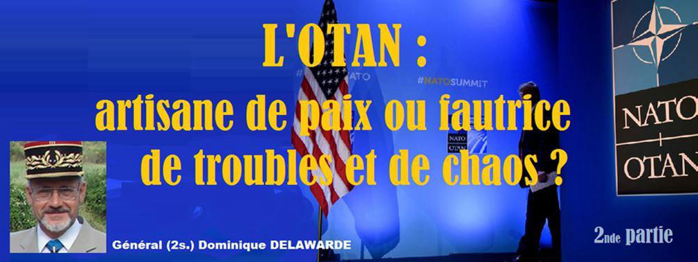
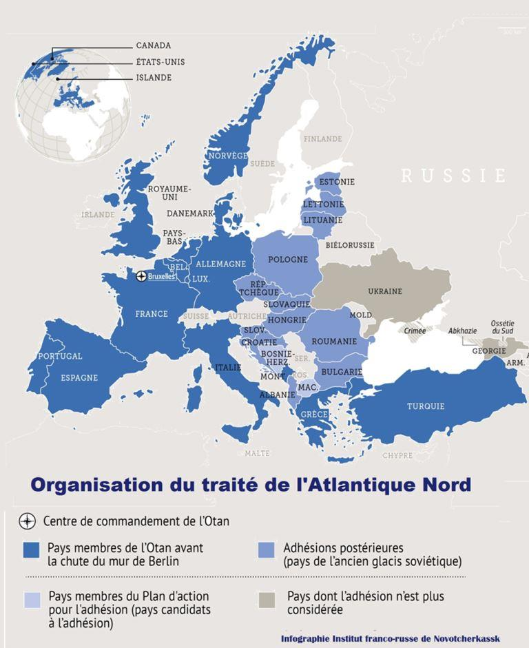
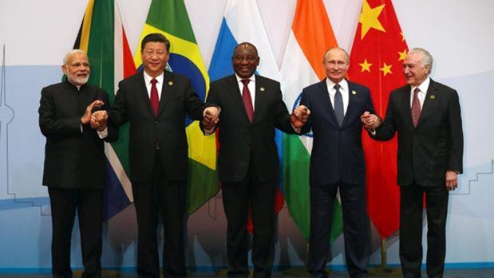
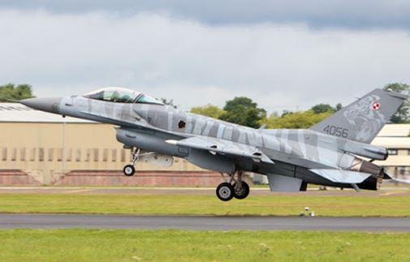
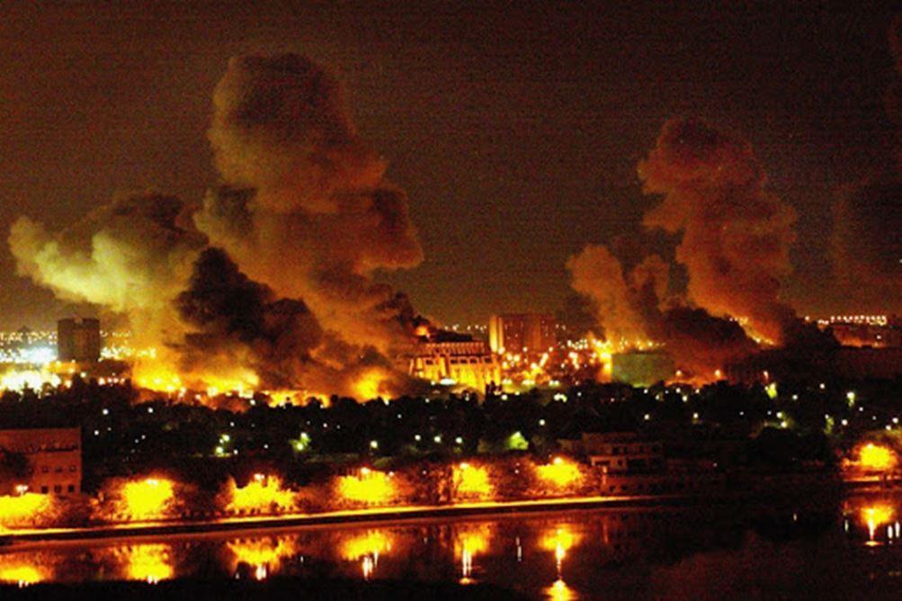
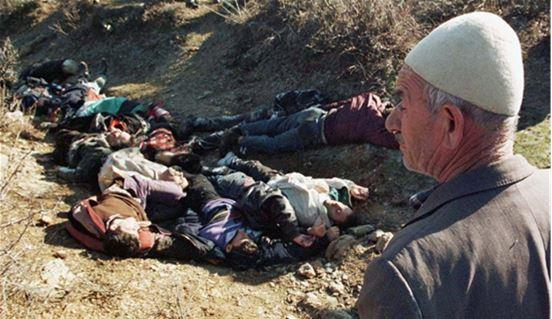
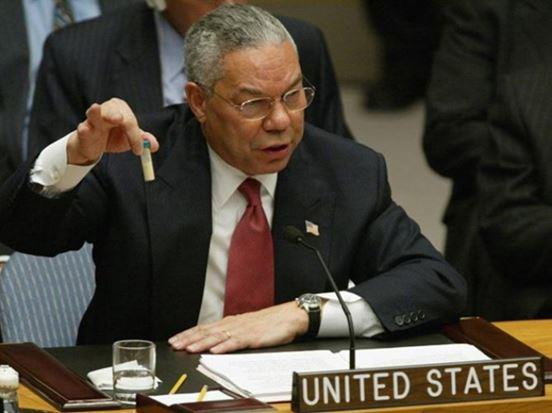

L’OTAN : artisane de paix ou fautrice de troubles et de chaos ? (2nde partie)
par Dominique DELAWARDE

2ème réactualisation post-guerre froide du Concept stratégique de l'OTAN
En avril 1999, le concept stratégique de l'OTAN subit une nouvelle réactualisation alors même que les bombardements sur la petite Serbie sont toujours en cours. Sans surprise, on constate un nouvel élargissement du spectre des menaces, des centres d'intérêt, des zones géographiques. Ce nouveau texte ouvre des portes toujours plus grandes à l'ingérence pour une OTAN qui perçoit et présente son action en ex-Yougoslavie, et ses bombardements sur la Serbie comme une grande victoire. Cinq remarques sur le concept stratégique de 1999.
1 - C'est un texte moins « néoconservateur » que celui de 1991. Les références à l'ONU y sont donc beaucoup plus nombreuses.
2 – La volonté d'élargissement y est clairement affichée. Comme il ne peut être qu'à l'Est, il viendra forcément en violation des promesses faites à la Russie en 1990 et sera perçu par cette dernière comme un encerclement toujours plus menaçant. Le Partenariat pour la Paix, antichambre d’une adhésion pleine à l'OTAN y est fréquemment évoqué.
3 – La Méditerranée toute entière et ses pays riverains entrent dans le champ de préoccupation et d’action de l'OTAN.
4 – L'Ukraine est l’État le plus cité dans ce concept stratégique 1999. (déjà...)
5 – La prolifération des armes de destruction massives NBC et les attaques possibles contre les systèmes d'information sont des menaces désormais prises en compte par l'OTAN.
LE BILAN DES ACTIONS DE L'OTAN LORS DE LA DÉCENNIE 2000-2010 EST TOUT AUSSI DÉSASTREUX QUE CELUI DE LA DÉCENNIE PRÉCÉDENTE
Il y a d'abord les élargissements à l'Est, perçus par Moscou comme autant de violations des promesses de février 1990 et justifiant un réarmement russe à marche forcée, initié par Poutine dès 2001.
Pas moins de 9 États est-européens rejoignent l'OTAN au cours de la décennie 2000-2010 : La Bulgarie, les 3 pays baltes, la Roumanie, la Slovénie, la Slovaquie, la Croatie et l'Albanie. L’OTAN compte donc 24 états en 2010.
Il y a bien sûr, l'opération en Afghanistan, très loin de l'Atlantique Nord, initiée en 2001 avec le feu vert de l'ONU. L'OTAN se retirera 13 ans plus tard, laissant seuls les américains et sans avoir obtenu de résultats tangibles et durables.
En 2003, sans accord de l’ONU, les USA échouent à faire participer l’OTAN à la guerre en Irak sous le faux prétexte des armes de destruction massive. Mais dans cette opération irakienne, il y a eu, tout de même, une très forte « empreinte de l’OTAN » représentée par les USA, chef incontesté de l’organisation militaire intégrée et par une dizaine de pays membres de cette organisation : le Royaume-Uni, l’Espagne, le Portugal, l’Italie, le Danemark, les Pays Bas, la Pologne, la Hongrie, la Roumanie, la République tchèque. Pour les populations victimes de cette agression, c’est bien un noyau dur « OTAN » qui était à la manœuvre ... A noter que le prêcheur en chef US de cette croisade ne s'appelait pas Pierre l'Ermite, mais Paul Wolfowitz (encore lui) revenu aux affaires en 2001 après huit ans d'absence pour occuper la place de numéro 2 au Pentagone.
Une moyenne de 800 sorties aériennes par jour pendant 4 mois, soit près de 100 000 sorties, des pertes humaines directes et indirectes (post conflit) considérables de plusieurs centaines de milliers de morts, la légalisation de la torture aux USA, les images détestables d’Abu Ghraib et de Guantanamo, des bavures à répétition dans les bombardements, la montée incontestable de la haine contre l’Occident chez les populations injustement agressées et la montée du terrorisme qui accompagne la haine, la création de l'organisation «État Islamique», les premières vagues migratoires ....etc : voilà le résultat chaotique de l'action de l'OTAN lors de la décennies 2000-2010.
Même si la France, l'Allemagne et le Canada ont refusé de participer à la croisade anti-irakienne, sauvant ainsi l'honneur de l'OTAN, onze des dix-huit états membres de l'OTAN de l’époque ont accepté, sans discuter, de mentir et d'agir avec leur chef de meute US, presque autant que pour les bombardements de la Serbie. Ils ont sali durablement l'image de l'OTAN, devenue pour de nombreux pays d'Asie, d'Afrique et d'Amérique du Sud, une coalition d'états menteurs, d'états voyous, utilisant les sanctions économiques, la menace et la force sans modération, méprisant l'ONU.
Toute action entraînant une réaction, la Russie et la Chine se sont réarmées à marche forcée, mais dans la discrétion, au cours de la décennie 2000-2010. La Chine a bénéficié d'une montée en puissance extrêmement rapide de son PIB. L'OCS, créée en 2001 et les BRICS créés en 2008 ont constitué les deux premiers embryons d'opposition organisée à l'unilatéralisme hégémonique occidental.

*
3ème réactualisation post-guerre froide du concept stratégique de l'OTAN
Le 19 novembre 2010, un nouveau concept stratégique de l'OTAN voit le jour. Il constitue la nouvelle référence pour la période 2010-2020, donc celle qui est en vigueur aujourd'hui, et qui devrait être réactualisée l'année prochaine.
C’est le concept stratégique le plus offensif jamais proposé aux membres de l'alliance.
Il a été rédigé par une équipe clairement néoconservatrice. Anders Fogh Rasmussen, le secrétaire général de l’OTAN en charge de l’élaboration de ce texte, était un ancien premier ministre danois, très proche de l’administration Bush. Il avait soutenu la guerre d’Irak de 2003 et y avait même envoyé des troupes danoises. Il a dû sa cooptation et sa promotion par les US à la tête de l’OTAN au fait qu’il était un « néoconservateur européen assumé ». Cela semble être d’ailleurs une condition « sine qua non » pour accéder au poste de Secrétaire général de l’OTAN depuis 1991 ...
Par ailleurs, c’est un groupe d’experts présidé par l’ancienne Secrétaire d’État américaine, Madeleine Albright, qui a été chargé de dresser un bilan des enjeux auxquels l’Alliance devait faire face. Ce même groupe d’experts a été chargé de rédiger des recommandations pour ce concept stratégique 2010. Pour rappel, Madeleine Albright a toujours été, elle aussi, une néoconservatrice pure et dure. En 1996, elle déclarait sur CBS news que « la mort de 500 000 enfants irakiens liée aux sanctions US contre l’Irak était un prix à payer qui en valait la peine ».
Elle s'est ensuite excusée de cette déclaration qui révélait, en fait, sa véritable nature.
Sans entrer dans les détails de ce concept stratégique 2010, les deux premiers mots du titre, qui en compte quatre, constituent, à eux seuls, tout un programme : « Engagement actif ».
L’OTAN n’a donc plus pour seule vocation de « défendre » ou de « dissuader », mais de « s’engager activement ».
C’est à l’évidence, une fois de plus, la porte grande ouverte aux ingérences dans les affaires des états souverains, au seul profit des intérêts américains. Il est aussi intéressant d’observer que sur un texte de 4800 mots, le mot « ONU » n’est plus prononcé que trois fois. C’est dire la considération que les rédacteurs du texte apportent désormais à l’instance qui représente pourtant la légalité internationale...
Au cours de la décennie 2010-2020, les ingérences de l'OTAN se multiplient un peu partout sur la planète.
On la retrouve dans les printemps arabes et en particulier dans la campagne libyenne qui a largement outrepassé la résolution onusienne, a fait sauter la digue retenant les flux migratoires venus d’Afrique et a engendré un chaos régional et une guerre civile toujours en cours avec, une fois de plus, un bilan économique et humain désastreux pour les populations locales. La déstabilisation des pays riverains qui en a résulté a permis au terrorisme islamiste de s’y implanter toujours plus et a conduit la France à y empêtrer son armée.
On retrouve aussi cette ingérence de l'OTAN en Ukraine, derrière le coup d'état pro-occidental visant à élargir toujours plus à l'Est, l'influence de l'Alliance Atlantique en violation des promesses de février 1990 faites aux russes par les occidentaux. On la retrouve aussi en Syrie, au Yémen ou en Afghanistan où, sous le faux prétexte de combattre le terrorisme qu'elle instrumentalise, la « coalition occidentale » cherche à imposer des changements de régime et/ou un remodelage des frontières qui lui profitent.
La place Maidan en pleine insurrection (Ukraine)
On la retrouve au Venezuela, où les diplomaties des pays membres de l'OTAN s'accordent à soutenir l'opération de changement de régime initiée par les USA.
On la retrouve dans la crise iranienne, dans laquelle, contraints et forcés, les pays membres de l'Alliance ont dû appliquer la politique de sanctions décidée par les seuls USA.
Au cours de la décennie 2010-2019, ce sont de 300 à 350 000 bombes qui auront été larguées par des pays membres de l'OTAN sans pour autant régler le moindre problème sur la planète. Alors, que peut-on attendre aujourd'hui de la réactualisation du concept stratégique de2020 ?
*
Trois hypothèses sont à envisager pour ce concept 2020.
1ÈRE HYPOTHÈSE : LA FUITE EN AVANT
Faisant preuve d'une assurance dépassant largement les moyens dont ils disposent, les responsables politiques de l'OTAN pourraient être tentés d'élargir davantage encore le spectre des menaces (cyberguerre, guerre de l'information ...) et des zones d'intérêt à prendre en compte. (Asie de l'Est et mer de Chine, Afrique Sub-saharienne, zones polaires, espace). Le but serait de s'efforcer de conserver, par la puissance militaire, économique, financière, médiatique, technologique, numérique et spatiale, l'hégémonie qui est, encore aujourd'hui, occidentale quoique sérieusement contestée.
Le problème posé par cette solution est d'abord un problème de moyens dans un occident en déclin économique. Comment faire toujours plus, avec moins ? A force de vouloir être partout le premier, ne risque-t-on pas de l'être nulle part ? Comment conserver la position du fort au faible partout avec des moyens déclinants et sur un échiquier de plus en plus vaste ? Quelles seront les priorités ? L'Europe orientale ou la mer de Chine ? L'espace ou le numérique ? L'Afrique subsaharienne ou les zones polaires ?
Le deuxième problème posé par cette fuite en avant est celui de la cohésion de l'Alliance et celle des opinions publiques de chaque état membre.
Si défendre son territoire ou le territoire d'un membre de l'Alliance pourrait peut-être faire consensus entre les pays de l'Alliance, mourir au fin fond de l'Europe orientale ou de l'Asie, qu'elle soit Proche ou moins Proche, sous un prétexte douteux et pour des intérêts dont on percevra tôt ou tard qu'ils ne sont pas les nôtres, n'enthousiasmera probablement pas le soldat européen.
On ne gagne pas avec des soldats qui ne croient pas en leur cause. A l'heure d'internet, et des réseaux sociaux, la propagande de guerre et la manipulation médiatique des foules ne marchent pas toujours aussi bien que prévu.
Cette fuite en avant n'est pas invraisemblable. Les hommes politiques européens ont parfois tendance à surestimer la force de l'OTAN et à sous-estimer celle de ses adversaires potentiels. Espérons qu'ils ne feront pas d'erreur d'appréciation.
2ÈME HYPOTHÈSE : LE RETRAIT UNILATÉRAL DES USA
La 2ème hypothèse d'évolution du concept stratégique de l'OTAN pourrait être liée à un retrait brutal et unilatéral des USA. Cette éventualité a été évoquée à plusieurs reprises par Trump fin janvier début février 2019. Elle correspondrait d'ailleurs au discours de campagne du locataire de la Maison Blanche qui qualifiait l'OTAN d'obsolète en 2016.
Cette solution aurait, pour les européens, l'immense avantage de les mettre devant leurs responsabilités et de les contraindre à organiser et à assumer, eux-mêmes, la défense de l'Union Européenne. Ils y retrouveraient une part de leur souveraineté et de leur indépendance. Ils y retrouveraient aussi des avantages économiques considérables avec la liberté de pouvoir commercer avec qui bon leur semble, la liberté de pouvoir concevoir et fabriquer eux-mêmes leurs propres matériels majeurs de défense, sans se les voir imposer par l'oncle SAM au fumeux prétexte d'une meilleure interopérabilité.
Il est toutefois peu probable que le Congrès US laisse faire. L'allié européen constitue un partenaire commercial captif très important et solvable pour les USA, notamment pour le marché de l'armement. Il est difficilement envisageable que les USA renoncent à leur position dominante sur ce marché d'autant que celle-ci leurs donne un pouvoir de veto sur toutes les opérations militaires avec emploi de matériels « made in USA ».

F-16 polonais
Par ailleurs, après 70 ans de soumission et de dépendance, la quasi-totalité des pays de l'UE, à l'exception notable de la France, préfère le status-quo au grand saut dans l'inconnu. Affecté d'un véritable syndrome de Stockholm, les dirigeants européens sont prêts à payer et à faire de nouvelles concessions aux USA, pour qu'ils continuent de « patronner » l'Alliance. Il n'y a donc pas grand-chose à attendre de ce côté-là.
3ÈME HYPOTHÈSE : LE RÉÉQUILIBRAGE
La 3ème hypothèse concernant le concept stratégique de l'OTAN serait celle d'un rééquilibrage de l'alliance qui serait constituée de deux piliers dont une composante européenne assumant une responsabilité beaucoup plus importante pour sa propre défense.
Les USA ont besoin vital et urgent de reporter leur effort militaire sur l'Asie face à une Chine qui monte très rapidement en puissance et qui est nommément désignée comme adversaire principal dans les dernières analyses stratégiques US. Si rien n'est fait à cet égard, la place de première puissance mondiale économique et militaire sera gagnée par la Chine lors de la décennie 2020-2030.
Les américains, comme les européens, n'auraient-ils pas intérêt, à rechercher un nouvel équilibre géostratégique mondial, seule source de paix, en associant les russes à l'OTAN, ce qui réduirait les tensions en Europe et tiendrait la Chine en respect pour quelques décennies au moins ?
*
Sans plus tarder, venons-en à la conclusion, c'est à dire à la réponse à la question posée dans le titre de l'article.
Incontestablement, l'OTAN a été un facteur de paix lors de la période 1949-1990. Aucune bombe otanienne n'est venu perturber la quiétude de l'Europe ni celle de la planète pendant 41 ans.
L'OTAN a imposé la paix par une dissuasion efficace, par un équilibre de la terreur et par l'idée d'une destruction mutuelle assurée en cas de conflit Est-Ouest.
Incontestablement aussi, l'actualisation du concept stratégique de 1991 sous influence néoconservatrice US a changé la nature de l'OTAN et ouvert la porte aux ingérences tous azimuts et sous tous prétextes. En moins d'un quart de siècle 1995-2019, plus d'un million de bombes ont été larguées par des pays membres de l'OTAN agissant en coalition de circonstance.
Plusieurs millions de victimes, directes ou indirectes, de ces ingérences et de ces bombardements sont à déplorer dans une indifférence coupable des opinions publiques occidentales. Il est d'ailleurs à craindre que nous payions un jour au prix fort le prix de la haine que nos ingérencesmeurtrières ont suscité.
Les prétextes avancés ont souvent été fallacieux. Le mensonge a régné en maître, le plus souvent relayé par les médias mainstream. Que ce soit la fausse histoire des couveuses du Koweït en 1990, le faux massacre de Racak de 1999 pour le Kosovo, la fiole de poudre de perlimpinpin présentée en 2003 par Colin Powell à l'ONU censée représenter l'arme de destruction massive de Saddam Hussein, les faux massacres de Bengazi pour justifier l'intervention en Lybie, les attaques au gaz sous faux drapeau en Syrie pour justifier la ridicule frappe conjointe US-UK-FR de 2018, le faux combat contre un terrorisme que nous avons contribué à créer en Syrie, terrorisme que nous avons instrumentalisé, financé et soutenu, directement ou indirectement avec la collaboration de nos «bons alliés du Golfe», pour renverser Bachar et démembrer la Syrie au seul profit d'Israël.
Alors oui, l'OTAN est devenue fautrice de troubles et de chaos depuis la fin de la guerre froide.
Les Atlantistes forcenés, faisant abstraction de ces troubles, de ces chaos, et de ces victimes, me rétorqueront qu'après tout, nous n'avons pas connu la guerre en Europe depuis 1999, fin de la campagne aérienne de l'OTAN sur la Serbie.
Je leur répondrai que l'action de l'OTAN a fait, et continue de faire, le lit des conflits de demain en suscitant le réarmement de la Russie et de la Chine, en provoquant des vagues migratoires qui déstabilisent l'Europe, en faisant naître et en entretenant la haine de l'Occident et la montée du terrorisme qui l'accompagne.
*
Emmanuel Macron a jeté un pavé dans la mare le 7 novembre dernier, en jugeant l'OTAN en état de « mort cérébrale » dans un entretien avec le magazine « The Economist ». Mais il ne l'a sans doute pas fait pour les bonnes raisons que j'ai pu évoquer ci-dessus. Il l'a fait pour trois raisons : l'une bonne, l'autre discutable, la dernière mauvaise.
1 – La bonne raison est celle de la dénonciation de l'unilatéralisme hégémonique des USA sur l'OTAN et, en raison sous-jacente, l'opposition à l'extraterritorialité du droit US qui minent l'indépendance et la souveraineté des états de l'UE.
2 – La deuxième raison, plus discutable, est celle de son opposition à l'intervention turque dans le nord syrien au prétexte que celle-ci, en contraignant les kurdes syriens à la soumission au gouvernement de Damas, vient réduire à néant le projet « occidental », pour ne pas dire otanien, de démembrement de la Syrie au profit d'Israël.
3 – La troisième raison possible que je qualifie de mauvaise est de déclarer l'OTAN en état de mort clinique pour tenter de convaincre ses états membres d'entreprendre un effort de « réanimation ». Chacun comprendra qu'un tel effort, s'il réussissait, ne pourrait conduire qu'à de nouveaux désastres. Si l'OTAN est en état de « mort cérébrale » alors qu'elle est plus que septuagénaire, considérons donc qu'elle a fait son temps. L'acharnement thérapeutique n'est pas souhaitable dans ce cas précis. Qu'elle repose en paix. Cela fera le plus grand bien à la planète.
Je voudrais terminer par une petite devinette, en forme de boutade.
Quel homme politique connu a déclaré récemment dans un amphithéâtre universitaire : « La devise de mon école de formation était: Ne mentez pas, ne trichez pas, ne volez pas et ne tolérez pas que d'autres le fassent. Dans le cadre de mes fonctions, nous avons menti, triché et volé. Nous avions des sessions d'entraînement entières consacrées à cela… » ?
C'est Mike Pompeo, actuel Secrétaire d’État US, ancien directeur de la CIA, major de sa promotion à West Point, lors d'une intervention auprès d'étudiants de l'Université A&M du Texas, en avril dernier. Le pire, c'est qu'il a été applaudi par l'auditoire qui a trouvé cette déclaration très amusante…
Partager cette page